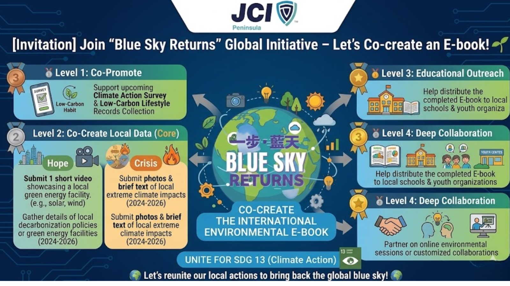

Blue Sky Returns
Global environmental E-book
全球環境電子書
「一步・藍天」是由 JCI Peninsula（香港半島青年商會）發起的國際環境共創計畫。我們正在製作一本全球環境電子書，讓下一代能更清楚看見：氣候危機已經發生，而各地也正出現值得記錄與分享的綠色解方。

這一頁是 Blue Sky Returns 的專案導覽中心。你可以先理解整個合作旅程，再依照你的氣候行動者身分進入對應任務： 符合資格的帳號登入後，可上傳地方資料；部分協作帳號也會開啟後續內容管理功能。
請先登入氣候行動者帳號，系統會自動判斷你是否能上傳資料或開啟進一步協作功能。
一般訪客目前可閱讀導覽、了解資料需求與專案流程。
Blue Sky Returns is an international environmental co-creation initiative led by JCI Peninsula (Hong Kong). We are building a global E-book to help the next generation understand both the climate crisis already happening around us and the local green solutions that are giving us hope.
「一步・藍天」是由 JCI Peninsula（香港半島青年商會）發起的國際環境共創計畫。我們正在製作一本全球環境電子書，讓下一代能更清楚看見：氣候危機已經發生，而各地也正出現值得記錄與分享的綠色解方。
By connecting stories from different cities and regions, we want students, schools, youth groups, and community partners to see climate change not as a distant topic, but as something local, visible, and actionable.
透過連結不同城市與地區的真實案例，我們希望讓學生、學校、青年組織與社區夥伴明白：氣候變化不是遙遠議題，而是正在身邊發生、可以被理解、也可以一起行動改變的現實。
This initiative supports SDG 13: Climate Action. We want to document not only the crisis, but also the hope emerging from local action, clean energy, resilience, and community response.
本計畫呼應 SDG 13：氣候行動。我們希望記錄的不只是危機，也包括各地透過潔淨能源、韌性建設與社區行動所展現出的希望。
To make this E-book truly global, we invite JCI sister chapters and international partners to join as supporting organizations. Depending on your chapter’s capacity and schedule, you can participate in one of the following ways:
為了讓這本電子書真正成為全球共同創作的成果，我們誠邀各地 JCI 姐妹分會與國際夥伴成為支持組織。你可以按分會的時間與資源安排，選擇以下不同參與方式：
Support the project by helping us share our Climate Action Survey and Low-Carbon Habit Photo Collection through your local network.
透過你所在城市的分會、學校、青年網絡或合作夥伴，協助推廣我們的「氣候行動問卷」與「低碳生活照片募集」。
Help us build a global database by contributing real materials from your city or region.
協助我們建立全球資料庫，提交你所在城市或地區的真實案例。
After the E-book is completed, help us distribute it to local primary schools, youth groups, and educational partners in your city.
當電子書完成後，協助把成果推廣到你所在城市的本地小學、青年組織與教育合作夥伴。
If your chapter would like to explore more meaningful collaboration, we welcome deeper partnership discussions.
如果你的分會希望進一步參與，我們也非常歡迎展開更深入的合作討論。
這張合作圖把專案裡的推廣、共創、教育與延伸合作整體串起來，讓使用者能在文字導覽之外，也用視覺方式理解 Blue Sky Returns 的合作架構。

在這個頁面裡，它扮演的是「導覽圖」角色，幫助使用者快速看懂自己現在位於哪個參與階段，接下來又能往哪一段走。
對第一次進站的人來說，這比單看權限說明更容易建立全貌，也更適合在手機上快速滑看。